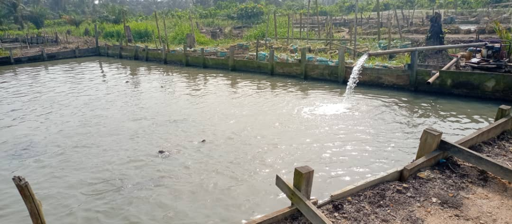
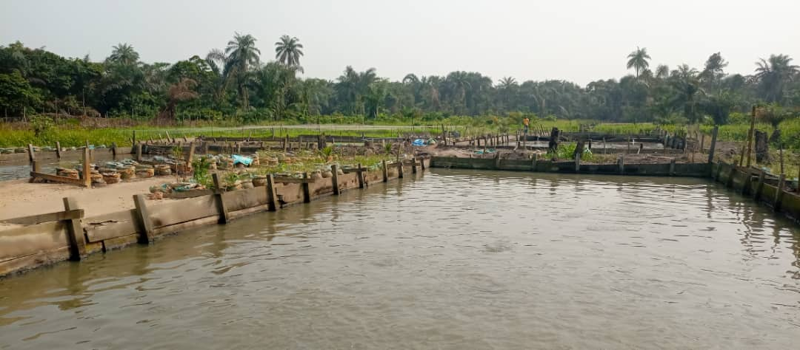

Fish farming is undoubtedly one of the most popular type of farming in Nigeria at the moment.
Fish farming in Nigeria has gone beyond the traditional method of setting out into a river,
stream, sea, ponds, or lakes to bait fish by either casting nets or fishing tackle
(although this is still very much practiced). Nowadays, with the modern-day fishing farming methods in Nigeria,
you can practice fish farming in your compound or with a water tank, provided you have the space.
Fish is an essential source of food in Nigeria;
a visit to the typical Nigerian market will present you with various
fishery products,
from fresh live catfish in plastic buckets to frozen fish, roasted fish, dry fish, and many more. There is a massive market for fish farmers in Nigeria, depending on the type of fish farming you wish to specialise in.
FACTS ABOUT FISH FARMING IN NIGERIA
- Domestic production only meets about 40% of the demand for fish.
- Catfish is the most farmed species.
- Nigeria is the 3rd largest producer of fish in Africa.
- The contribution of the fisheries sector to Nigeria’s GDP is 3.24%.
DOMESTIC PRODUCTION ONLY MEETS ABOUT 40% OF THE DEMAND FOR FISH.
According to data made available by the World Bank, Nigeria produced about 1,169,478 in 2018, which is about 40% of Nigeria’s total annual fish demand of about 3.4 million metric tons; the rest of 60% of demand is met through fish importation.
Considering this data, you must have guessed by now that there is a huge market for intending fish farmers in the country. In an interview with Premium Times news outlet, An aquaculture expert in Nigeria stated the need for Nigeria to raise 400,000 new fish farmers into the Nigerian aquaculture industry.
CATFISH IS THE MOST FARMED FISH SPECIES IN NIGERIA
The aquaculture sector involved in the breeding, rearing, and harvesting of fish in Nigeria grew in production from 21,700 tonnes in 1999 to 316,700 in 2015, which is an over 1,400% increase within 25 years. Despite this growth, catfish, which are typically grown in ponds and tanks, is the most farmed species in the country and is responsible for more than half of the aquaculture production.
The National President of Catfish Association of Nigeria (CAFAN), CHIEF Tayo Akingbolagun, in his statement at their 2016 annual general meeting, said that Nigeria produced over 370,000 metric tonnes of catfish.


NIGERIA IS THE 3RD LARGEST PRODUCER OF FISH IN AFRICA.
The world total fisheries report by the World Bank’s most recent data in 2018 showed that Nigeria is currently Africa’s 3rd largest producer of fish in Africa at 1,169,478 metric tons, with Egypt (1st) and Morocco (2nd) leading the continent at 1,934,743 and 1,387,815 metric tons respectively.
Nigeria’s household fish consumption per capita is 13.3kg annually, which is low compared to the world’s average, which is at 20.3kg per capita annually.
fish farming in Nigeria NBC GDP stats
THE CONTRIBUTION OF THE FISHERIES SECTOR TO NIGERIA’S GDP IS 3.24%
According to the GDP data released by the National Bureau of Statistics (NBS) for Q1 2021, the fisheries sector had a 3.24% contribution to the country’s GDP. This was a positive indicator for the fisheries sector, which had a -3.60% and -2.07% growth contribution in Q4 and Q3 2020.
Despite having a 5.68% contribution in Q2 2020, its total contribution to the country’s GDP in the year 2020 was 0.26%.